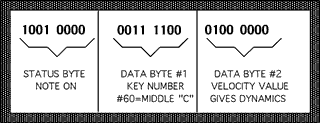

Much as English words are divided into nouns, verbs, and the like, MIDI words (bytes) can be classified into groups called status bytes and data bytes. A status byte indicates action and data bytes describe that action. Let us say for example that we are trying to communicate the fact that we played middle "C" on the keyboard at a mezzo forte dynamic level. The MIDI translation (as binary code) would be as follows:
10010000 00111100 01000000
You can see that this musical action was described in a three-word sentence. The first word, 10010000, is a status byte that indicates the action "note on". The following two words are data bytes that further describe the note on action. The second word, 00111100 translates into the number of the key that was depressed. The range of possibilities is 0-127, where middle "C" is key number 60. If you translate the binary number 00111100 into a decimal number you will see that it in fact is the number 60, middle "C". The final word, 01000000, refers to the velocity with which the key was depressed, and which most synthesizers translate into dynamics. The range here again is 0-127. 01000000 translates into a decimal value of 64 or about mid way between the extreme ranges, hence the relative dynamic level of mf

This sentence only describes the note-on action, it doesn't specify the duration or the end of the note. That is expressed as another sentence, a "note-off" command. Duration then is simply the clock time (real-time) between the note-on and note-off events.
Each musical action has its own status byte and predetermined number of data bytes, according to the syntax of the MIDI language. So far we have seen the simplest of MIDI commands, those that turn notes on and off. MIDI commands may be broken down into two major groups; Channel Messages and System Messages.